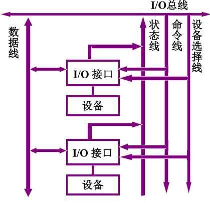
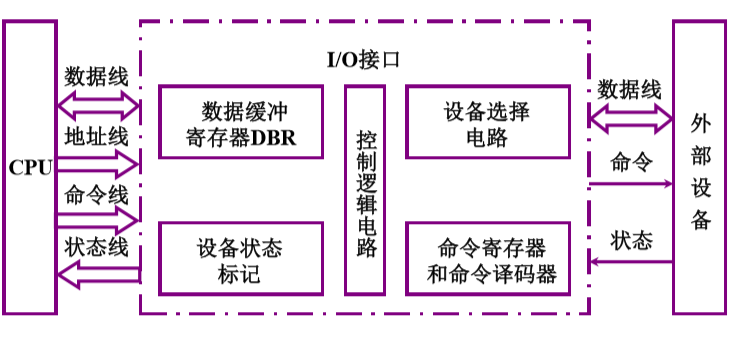
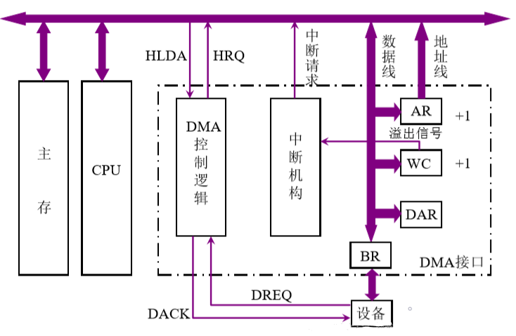

I/O 中断 链接到标题
输入输出系统的发展概况 链接到标题
- 早期，外部设备与主机的连接采用分散连接，每一个设备都有专用的控制电路，这些控制电路与 CPU 的控制电路设计在一起，紧耦合，增加和删除外部设备困难。CPU 与 IO 设备串行工作，主要使用程序查询方式。
- 随着外部设备增多，分散连接不适用于外部设备与主机的连接，因此出现了 IO 接口与 DMA 控制器，连接方式使用总线连接，一个总线可以连接多个设备，CPU 与 IO 设备并行工作，出现了两种工作方式分为中断方式、DMA 方式。
- 为了使输入输出系统的控制尽可能从主机中独立出来，出现了具有通道结构的阶段，通道可以看做成小型的 DMA 控制器，通道有自己的指令系统。
- I/O 处理机阶段
输入输出系统的组成 链接到标题
IO 软件 链接到标题
IO 软件的主要功能: 将用户编制的程序输入主机内，将运算结果输出给用户，实现输入/输出系统与主机工作的协调。
IO 指令 链接到标题
IO 指令分为操作码、命令码和设备码三部分组成，操作码负责 IO 指令区别其他指令的判别代码，命令码负责 I/O 的具体操作，设备码用来判断对哪一个设备操作。
通道指令 链接到标题
通道指令又称为通道控制字，它是通道用于执行 IO 操作的指令，可以由管理程序存放在主存的任何地方，由通道从主存中取出并执行。通道程序由通道指令组成，它完成某种外部设备与主存间传送信息的操作。
IO 硬件 链接到标题
输入/输出系统的硬件组成是多种多样的，在带接口的 I/O 系统中，I/O 硬件包括接口模块和 I/O 设备两大部分。在具有通道或 I/O 处理器的 I/O 系统中，I/O 硬件包括通道、设备控制器、IO 设备等。
外部设备 链接到标题
I/O 设备分为: 输入设备、输出设备、输入/输出兼容设备.
输入设备 链接到标题
- 键盘，按下一个键，查出按了哪个键，然后将此键翻译为 ASCII 码传输给计算机。
- 鼠标，光电鼠标内部的发光二极管发出的光线经过表面反射通过一组光学透镜，传输到一个光感应器件内成像，当光电鼠标移动时，其轨迹便会被记录为一组高速拍摄的连贯图像，被光电鼠标内部的专用图形分析芯片处理，完成光标定位。
输出设备 链接到标题
阴极射线管(CRT)显示器 链接到标题
CRT 显示器按扫描方式不同 ，分为光栅扫描与随机扫描，按分辨率不同，分为高分辨率和低分辨率。
- 分辨率指显示器所能表示的像素个数，分辨率越高，图像越清晰。
- 灰度级指黑白显示器中所显示像素点的亮暗差别。
CRT 发光是由电子束打在荧光粉上引起的，电子束扫过之后，发光亮度只能维持几十毫秒，为了使人眼能 看到稳定的图像，必须重复扫描整个屏幕，按人的视觉生理，刷新率大于 30 次/s 时才不会感到闪烁。
分辨率为 1024×10241024×1024 像素，256 级灰度的图像，存储容量为 1024×1024×log2(256)=1MB1024×1024×log2(256)=1MB
打印机 链接到标题
- 击打式，点阵式(逐字、逐行)
- 非击打式，激光、喷墨
I/O 接口 链接到标题
总线连接方式的 I/O 接口电路 链接到标题

- 数据线: 用作 I/O 设备与主机之间传送数据
- 设备选择线: 用来传送设备码
- 命令线: 用来传输 CPU 向设备发出的各种命令信号
- 状态线: 将 I/O 设备的状态向主机报告的信号线。
接口的功能和组成 链接到标题
- 选址功能，设备选择电路组成
- 传送命令功能，命令寄存器、命令译码器组成
- 传送数据功能，数据缓冲寄存器组成
- 反映设备状态功能，设备状态标记
I/O 接口的基本组成 链接到标题

接口类型 链接到标题
-
按数据传送方式分类
- 并行接口
- 串行接口
-
按功能选择的灵活性分类
- 可编程接口
- 不可编程接口
-
按通用性分类
- 通用接口
- 专用接口
-
按数据传送的控制方式分类
- 中断接口
- DMA 接口
I/O 方式 链接到标题
程序查询方式 链接到标题
程序查询方式又称为程序控制 I/O 方式，这种方式中，数据在 CPU 与外部设备之间的传输完全靠计算机程序控制，是在 CPU 主动控制下进行的，当需要输入或输出时，CPU 暂停执行主程序，转去执行设备输入输出的服务程序，根据服务程序中的 I/O 指令进行数据传送。
这种方式的缺点在于每时每刻需要不断查询 I/O 设备是否准备就绪，为了正确完成这种查询，需要执行以下 3 条指令
- 测试指令，用来查询 I/O 设备是否准备就绪
- 转移指令，若 I/O 设备未准备就绪，则执行转移指令，即转到测试指令，继续测试 I/O 设备的状态。
- 传送指令，若 I/O 设备准备就绪，则执行传送指令。
程序中断方式 链接到标题
CPU 启动 I/O 后，不需要停止现行程序的运行，而 I/O 接到启动命令后，进入准备阶段，准备就绪，向 CPU 提出请求，CPU 中断现行程序，为 I/O 服务，这种方式不需要 CPU 时刻查询 I/O 设备的状态，一次中断处理过程归纳为 5 个阶段:
- 中断请求、中断判优、中断响应、中断服务、中断返回
DMA 方式 链接到标题
DMA 方式是一种完全由硬件进行成组信息传送的控制方式，数据准备阶段，CPU 与外设并行，还降低了 CPU 在传送数据时的开销，因为信息传送不经过 CPU，而在外设和内存之间直接进行。
DMA 的传送方法 链接到标题
如果高速 I/O(通过 DMA 接口)和 CPU 同时访存，这时 CPU 需要将总线占有权让给 DMA 接口使用，通常 DMA 与主存交换数据采用以下三种方法。
停止 CPU 访问主存 链接到标题
DMA 接口向 CPU 发一个信号，要求 CPU 放弃地总线使用权，然后 DMA 获得总线控制权后，开始进行数据传送，数据传输后，DMA 接口通知 CPU 可以使用主存，并把总线控制权还给 CPU。
周期挪用 链接到标题
当 I/O 设备由 DMA 请求时，会遇到 3 种情况:
- CPU 不在访存，故 CPU 与 IO 访存请求未冲突
- CPU 正在访存，等待存储周期结束后，CPU 再将总线占有权让出
- CPU 与 IO 同时访存，此刻 CPU 要暂时放弃总线占有权，由 I/O 设备挪用一个或几个存储周期，这种方式既实现了 I/O 传送，又较好的发挥了主存与 CPU 的效率。
DMA 与 CPU 交替访问 链接到标题
这种方式适用于 CPU 工作周期比主存存取周期长的情况，不需要总线使用权的申请、建立和归还过程，总线使用权分时控制。
DMA 接口的功能和组成 链接到标题
DMA 接口的功能 链接到标题
- 向 CPU 申请 DMA 传送
- 处理总线控制权的转交
- 管理系统总线、控制数据传送
- 确定数据传送的首地址和长度，修正传送过程中的数据地址和长度
- DMA 传送结束时，给出操作完成信号。
DMA 接口组成 链接到标题

DMA 工作过程 链接到标题
预处理 链接到标题
DMA 接口开始工作前，CPU 必须做如下工作:
- 指明是输入数据还是输出数据
- 向 DMA 设备地址寄存器送入设备号，并启动设备
- 向 DMA 主存地址寄存器送入交换数据的主存首地址
- 对字计数器赋予交换数据的个数
数据传送 链接到标题
DMA 是以数据块为单位传送的，具体流程如下:
- 准备好一个字时，将该字读到 DMA 的数据缓冲寄存器中,表示数据缓冲寄存器满。
- 设备同时向 DMA 接口发请求
- DMA 接口向 CPU 申请总线控制权
- CPU 发出 HLDA 信号，表示允许将总线控制权交给 DMA 接口
- 将 DMA 主存地址寄存器中的主存地址送地址总线，并命令存储器写
- DMA 控制逻辑告诉 I/O，CPU 已经安排了 DMA 周期，记住为下一个字的传送做准备
- 将 DMA 数据缓冲寄存器的内容送数据总线
- 主存将数据总线上的信息写至地址总线指定的存储单元中。
- 修改主存地址和字计数值。
后处理 链接到标题
当 DMA 中断请求得到响应后，CPU 停止原程序执行，转去执行中断服务程序，做一些 DMA 的结束工作。